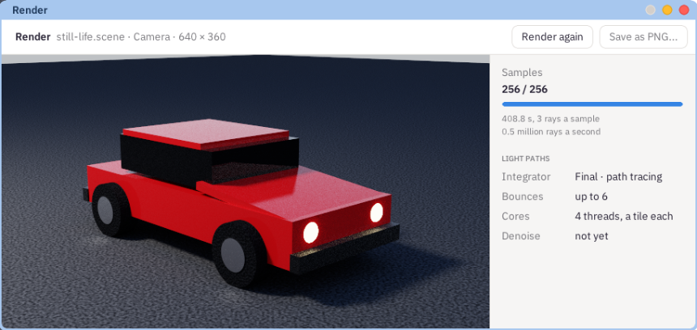

How Cafesa3D makes a picture, what its settings mean, and how to get a good one.
For every pixel, Cafesa3D sends a ray from your eye into the scene. Where it hits something, it asks each lamp how much light reaches that point, and then bounces on in a direction the material chooses - straight off a mirror, through glass, anywhere off plaster - until it reaches the sky or has bounced six times. That is path tracing, the method of Blender's Cycles.
One path per pixel is a guess, so the first picture is grainy. Each sample is another path for every pixel, and the pixel is their average, so the grain fades as they build up: four times the samples leaves half the grain. The top left of the view counts them.
More samples make a picture cleaner, not more detailed. Detail comes from the objects: their shapes, textures and size in the picture.
F12 renders through the camera, 640 by 360 pixels, to 256 samples. Beside the picture it shows how many samples it has, how long it has taken, and how many rays a second the machine is tracing. Render again starts afresh.
Saving the picture as a PNG is still to come.

The Render window: the picture on the left; on the right how many samples it has, how long it took and how many rays a second - here under QEMU's emulation, which is far slower than a real machine.
A render uses every processor the machine has: each takes a square of the picture, then the next. It runs below every window, so Cafesa3D, the desktop and everything else stay as quick to answer as ever - the render takes only the time nothing else wants.
The Render tab shows the settings: path tracing, 256 samples for F12, 64 for the Rendered view, up to six bounces, 640 by 360. They cannot be changed yet.